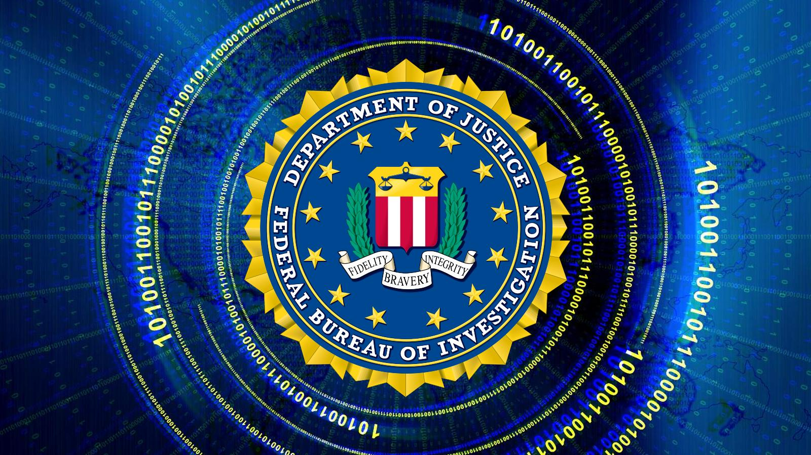

По данным CNN, ФБР расследует взлом системы NCIC — главного обменного хабом правоохранительной информации страны. Именно туда полицейские США обращаются при каждой остановке машины и обыске: розыскные, пропавшие, ордеры, угнанный транспорт, оружие, охранные ордера. Взлом обнаружили «за последние дни»; когда он произошёл, как попали внутрь и ушли ли данные — неизвестно. BleepingComputer подтверждает: ни о какой связи с мартовской историей ShinyHunters пока речи не идёт, ФБР на вопросы изданий не ответило.
В сентябре та же ShinyHunters заявила о взломе портала FBIJobs.gov через непатченную уязвимость Oracle PeopleSoft (CVE-2026-35273) — под угрозой оказались данные практически всех действующих и бывших сотрудников и соискателей ФБР. В октябре просочились 40 тысяч записей сотрудников DHS. На этой неделе Белый дом объявил об отставке руководителя национальной кибербезопасности Шона Кэрнкрасса. Трамп, комментируя свежее сообщение о взломе базы, ограничился оценкой «это нехорошо» — формального признания от ведомства по-прежнему нет.
Отдельного официального анонса инцидента нет — ФБР не подтвердила ни факт взлома NCIC, ни объём утечки, ни вектор атаки, поэтому утверждать, что применялись ИИ-агенты, нельзя. Но контекст говорящий: 13 ноября сам ФБР выпустил предупреждение о связке ARTEX — open-source ИИ-агентов, которые добираются до прав администратора меньше чем за три часа, — а Amazon на прошлой неделе доказала, что автономный агент Cairn сам нашёл zero-day и захватил сервер университета. Инструменты автономного взлома уже в боевом обороте; применяли ли их к NCIC — узнаем из официального расследования, если оно состоится.
Урок для всех, кто админит корпоративный софт: сентябрьская дыра ФБР — это просроченный патч PeopleSoft у подрядчика. Главное в такие недели: закрывать известные CVE у вендорских порталов и клиентских шлюзов, не откладывая «до релизного окна», и держать MFA на всех панелях, которые смотрят в интернет.